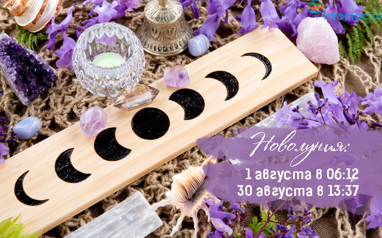
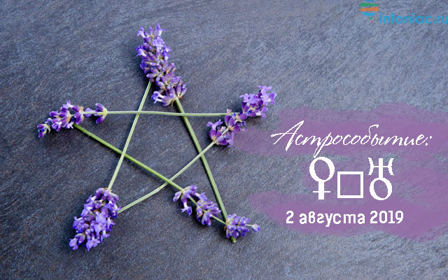
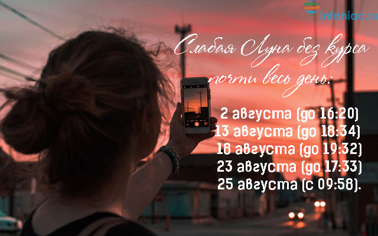
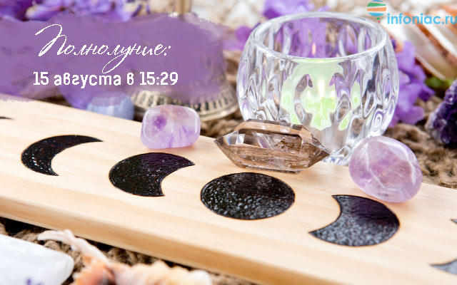

Лунный календарь повседневности: благоприятные дни для разных дел в августе 2019ПОЛЕЗНЫЕ СОВЕТЫ
После череды затмений и для кого-то довольно стрессового периода ретроградного Меркурия в августе 2019 можно будет немного расслабиться. В этом месяце будет иметь место два новолуния, а значит, менять фазу Луна будет 5 раз! В дни смены лунных фаз не советуем планировать важные дела, так как это достаточно напряженные дни, а Луна довольно слаба.
В целом в августе 2019 будет куда больше возможностей для начала новых дел, активной и плодотворной работы, продаж и покупок, а также и отдыха, потому что скопление планет в знаке Лев будет располагать к развлечениям и творческим занятиям.
Читайте также: Общий астрологический прогноз для всех знаков Зодиака на август 2019
В конце статьи ищите таблицу с перечислением основных дел и лучших дней для них в августе 2019.
ВНИМАНИЕ! Слабая Луна месяца будет наблюдаться в следующие периоды:
Слабая Луна в новолуние: 1 августа до 15:00; с 25 августа 17:30 до 30 августа 22:00;
Слабая Луна в полнолуние: с 14 августа 13:30 по 16 августа 02:00;
Слабая Луна на сожженном пути: с 5 августа 15:30 по 7 августа 19:00 (самый слабый период – 6 августа с 22:00 до 23:40);
Слабая Луна при смене фаз: 7 августа (весь день), 11 августа;
Слабая Луна в «холостом ходу» весь или почти весь рабочий день: 2 августа (до 16:20), 13 августа (до 18:34); 18 августа (до 19:32), 23 августа (до 17:33), 25 августа (с 09:58).
Периоды ЛУНЫ БЕЗ КУРСА, когда нельзя начинать новые дела, идти за покупками и ждать важных событий
01.08.2019 23:48 — 02.08.2019 16:20
04.08.2019 07:27 — 04.08.2019 16:30
06.08.2019 10:36 — 06.08.2019 18:31
08.08.2019 17:58 — 08.08.2019 23:35
10.08.2019 22:50 — 11.08.2019 07:50
13.08.2019 01:11 — 13.08.2019 18:35
16.08.2019 04:02 — 16.08.2019 06:49
18.08.2019 01:34 — 18.08.2019 19:33
21.08.2019 07:06 — 21.08.2019 07:37
23.08.2019 00:33 — 23.08.2019 17:34
25.08.2019 09:58 — 26.08.2019 00:05
27.08.2019 11:55 — 28.08.2019 02:53
29.08.2019 03:07 — 30.08.2019 02:57
МАГИЧЕСКОЕ ВРЕМЯ МЕСЯЦА: В августе 2019 два новолуния, а значит, и магических часов будет больше. Если вы не успеете загадать желание в начале месяца, у вас еще будет шанс снова попытать удачу в конце. Первый период будет длиться 1 августа с 06:12 и продолжится весь день до 2 августа 05:52, то есть 1-й лунный день будет очень длинным – около суток. Второй магический период можно будет ожидать 30 августа с 13:37 и до следующего утра 31 августа 06:20. Не пропустите!
Другие полезные статьи рубрики Лунный календарь на август 2019:
Лунный календарь красоты на август 2019
Лунный календарь стрижки волос на август 2019
Лунный календарь для растений на август 2019
Лунный календарь операций и опасных дней на август 2019
Лунный календарь здоровья, питания и зачатий на август 2019
МОЛОДАЯ ЛУНА с 06:12
♌ 1 АВГУСТА, четверг. 29-й, 30-й лунный день с 04:24, 1-й лунный день с 06:12. ЛЕВ
НОВОЛУНИЕ с 06:12
Луна без курса с 23:48
Символы дня: спрут (гидра, майя), золотой лебедь, светильник (лампада, третий глаз).
Астрособытие: Меркурий становится директным в 06:58. Возможно, кто-то очень ждет выхода Меркурия из ретро движения, и, наконец-то, сегодня он снова начнет движение в своем привычном направлении. Правда, еще пару дней дела Меркурия будут тормозиться, так как планета будет крайне медленной.
Сегодня новолуние, а значит, день слабой Луны, кода любые начинания не получат хорошего развития. Это первое новолуние в этом месяце, в знаке Льва. День подойдет для планирования, особенно в связи с отпуском, развлечениями и хобби. Также неплохо планировать дела, имеющие отношение к рекламе и пиару, творчеству или зачатию детей. Весь день с 06:12 будет продолжаться 1-й магический лунный день, поэтому времени на то, чтобы помечтать и запланировать новые дела у вас будет предостаточно.
Это неудачный день для решения каких-то вопросов, связанных с документами, обучением, транспортом или торговлей. Например, не советуем подписывать какие-то договора или договариваться с кем-то на словах. Имеется большая вероятность, что одна из сторон не будет следовать договору. Любые разногласия, возникшие в новолуние, не стоит принимать всерьез.
Что делать не следует: начинать или решать важные дела (особенно связанные с документами, обучением, транспортом или торговлей); принимать предложения, соглашаться на что-то; стирать; клеить обои; переезжать; брать/давать деньги в долг; знакомиться, заключать брак; обращаться к начальству.
Риски: переоценить свои силы; столкнуться с агрессией; принять неправильное решение в связи с отношениями.
Покупки: неудачный день, лучше отложить поход по магазинам.

♌♍ 2 АВГУСТА, пятница. 1-й, 2-й лунный день с 05:52. ЛЕВ, ДЕВА с 16:20
Луна без курса до 16:19
Символы дня: светильник (лампада, третий глаз), рог изобилия (пасть).
Астрособытие: Венера квадрат Уран в 13:00. Это напряженный аспект, который приносит резкие перемены, денежные потери и разные неожиданности, касающиеся личной жизни и отношений между людьми. Этот аспект крайне опасен для любых рискованных действий, связанных с деньгами. Он имеет место примерно дважды в год (если Венера не ретроградна), и в ближайшие 7 лет будет формироваться каждый раз, когда Венера будет проходить по знакам Водолея и Льва.
Этот день стоит провести в спокойной обстановке и не заниматься ничем особенно серьезным. День может оказаться довольно волнующим, могут быть сильные переживания, чувства трудно будет сдержать, несмотря на более спокойный и размеренный день Луны в Деве. Опасно начинать любые рекламные кампании: результаты могут быть прямо противоположные ожидаемым. Это также неблагоприятный день для романтических свиданий и признаний в любви (результаты могут оказаться совершенно непредсказуемыми).
Что делать не следует: рисковать деньгами; начинать рекламные проекты; выяснять отношения с партнерами; ходить на свидания; заключать брак или любые соглашения и договора; стирать; удалять плесень со стен.
Риски: быть непонятыми другой стороной; оказаться в неприятных ситуациях; спустить деньги на ветер. Есть также риски неожиданностей в любви и отношениях с деловыми партнерами.
Покупки: неудачный день, лучше отложить поход по магазинам.

♍ 3 АВГУСТА, суббота. 2-й, 3-й лунный день с 07:23. ДЕВА
Символы дня: рог изобилия (пасть), барс (леопард).
Этот день связан с негативными аспектами Луны с Юпитером и Нептуном, что делает его очень эмоциональным. У многих может появиться нежелание смотреть на реальность трезвым взглядом. Это день «розовых очков», когда вероятны обманы и самообманы. В этот день многие могут испытать разочарования, внутренние переживания, появится желание иметь что-то большее. Могут сниться яркие и запоминающиеся сны с глубоким смыслом. Лучше в этот день не допускать грустных мыслей, а проводить время в приятной компании. Хорошо посмотреть фантастический фильм или почитать захватывающую книгу.
Что делать не следует: стирать; удалять плесень со стен; обращаться с просьбами в высокие инстанции или к начальству; общаться с иностранцами по важным вопросам; устраивать грандиозные праздники, банкеты, встречи; отправляться в поездки водным транспортом; заключать брак.
Риски: столкнуться с обманом, мошенничеством или понять ситуации неверно.
Покупки: неудачный день, лучше отложить поход по магазинам; неблагоприятно покупать недвижимость и земельные участки (большая вероятность обмануться в своих ожиданиях или нарваться на мошенничество).
♍♎ 4 АВГУСТА, воскресенье. 3-й, 4-й лунный день с 05:53. ДЕВА, ВЕСЫ с 16:30
Луна без курса с 07:27 до 16:29
Символы дня: барс (леопард), древо познания.
Луна без курса почти весь рабочий день мешает началу важных дел, хоть Меркурий сегодня уже набирает скорость. Это воскресенье лучше провести в спокойной обстановке, заняться привычными домашними делами, сделать уборку или запланировать сортировку вещей. После 16:30 хорошо встретиться с друзьями, сходить на свидание, на концерт, в кино, театр или просто запланировать на вечер любую культурную программу. Также вечером можно запланировать банкет или посещение ресторана.
Что делать не следует: стирать; удалять плесень со стен; начинать любые важные дела при Луне без курса; торговать движимым имуществом (например, давать объявления о продажи машин, оборудования или мебели).
Риски: не получить желаемых результатов от дел, начатых при Луне без курса.
Покупки: более удачное время для похода по магазинам сложится после 16:30. Можно покупать одежду, косметику, обувь. Не ходить по магазинам при Луне без курса!

♎ 5 АВГУСТА, понедельник. 4-й, 5-й лунный день с 10:21. ВЕСЫ
Символы дня: древо познания, единорог.
Первая половина дня более удачна для разных дел, особенно связанных с отношениями или партнерством. Люди больше будут тянуться к противоположному полу, больше будут общаться и разговаривать, чем приступать к реальным действиям. Этот понедельник вряд ли будет связан с какой-то очень стремительной активностью. Хорошо наметить на него разговоры и обсуждения (лучше до 13:25, пока Луна будет приближаться к позитивным аспектам). Во второй половине дня труднее будет достичь компромисса или решить какие-то вопросы, добиться взаимопонимания. Это особенно следует учесть тем, кто работает с клиентами или занимается консультированием. Во второй половине дня лучше заниматься текущими бумажными вопросами и не принимать клиентов.
Что делать не следует: выяснять отношения; распускать слухи; соперничать с другими людьми.
Риски: препятствий в делах и расхождений во мнениях.
Покупки: покупки допустимы до 13:25, но особенно хорошо делать покупки до 09:00. Например, в утренние часы можно оформлять покупку одежды, обуви или любых женских товаров через Интернет.
♎♏ 6 АВГУСТА, вторник. 5-й, 6-й лунный день с 11:47. ВЕСЫ, СКОРПИОН с 18:32
Луна без курса с 10:36 до 18:31
Символы дня: единорог, журавль.
День больше подойдет для обычных рутинных дел, но не для начала нового. Утром могут возникнуть какие-то трудности с документами, могут быть досадные ошибки, недоразумения, недопонимания, слова могут быть восприняты неверно, либо вы совершите какую-то досадную опечатку. Именно поэтому работу с важными бумагами лучше отложить. Если это невозможно, то все надо делать с повышенной внимательностью.
Это также не самый удачный день для знакомств и общения по переписке: вас могутнеправильно понять или вы можете пропустить какую-то важную информацию. Вечером есть возможность принять серьезные решения, заняться важным исследованием или найти пропавшие вещи.
Что делать не следует: работать с документами (особенно в утренние часы); проводить переговоры, важные встречи; подавать заявления в суды или разные организации; проводить собеседования или устраиваться на новую работу.
Риски: проблем с документами; излишних трат на мелочи; ошибок и опечаток; получения неверной, ошибочной или намеренно искаженной информации.
Покупки: при Луне без курса не советуем ходить по магазинам! До 10:36 - не самое удачное время для покупок: большие риски сделать неудачную покупку. После 18:32 покупки возможны, но лучше не покупать одежду и любые товары для женщин. Допускаются мелкие и незначительные покупки, если в них есть необходимости.
ПРИБЫВАЮЩАЯ ЛУНА с 13:55
♏ 7 АВГУСТА, среда. 6-й, 7-й лунный день с 13:10. СКОРПИОН
I четверть, Вторая фаза Луны с 20:31
Символы дня: журавль, жезл (роза ветров, ключи).
Астрособытие: Солнце трин Юпитер в 10:31. Этот аспект дает оптимизм и вселяет надежды. Он хорош для разных юридических вопросов, начала лечения, благотворительности, начала учебных программ или издательской деятельности.
Впрочем, несмотря на позитивный аспект Солнца с Юпитером, Луна в этот день будет пораженаи не обещает очень спокойного дня. Общее состояние здоровья может быть лучше, больные будут идти на поправку, но вот психологическое состояние может быть в дисгармонии.
Эмоции в этот день будут кипеть, может быть излишнее беспокойство и капризность. Луна в Скорпионе обычно обостряет чувства и эмоции, а негативный аспект с Венерой и Солнцем даст плохое настроение и жалобы на жизнь. В этот день следует окружить себя позитивными эмоциями, заняться любимыми делами и не особенно транжирить деньги.
Что делать не следует: начинать новые дела; обращаться с просьбами к начальству; искать расположения других людей; мыть деревянные полы; удалять плесень со стен; клеить обои; переезжать; рисковать деньгами; отправляться в путешествия.
Риски: неразумных трат; истерик; проблем в отношениях.
Покупки: лучше отложить, неудачное время для покупок. Есть риск потратить деньги на удовольствия, а потом жалеть об этом.
♏♐ 8 АВГУСТА, четверг. 7-й, 8-й лунный день с 14:31. СКОРПИОН, СТРЕЛЕЦ с 23:35
Луна без курса с 17:58 до 23:34
Символы дня: жезл (роза ветров, ключи), феникс.
Астрособытие: Венера трин Юпитер в 23:27. Этот аспект считается одним из самых позитивных, так как в трине встречаются две самых позитивных планеты. В целом этот аспект будет окрашивать день в позитивные тона, будет давать уверенность, хорошее настроение и, конечно, удачу.
Начинания могут иметь успех, если связаны с творчеством, получением образования, исследованиями, экспериментами, укреплением своего авторитета и рекламой. Лучше всего начинать дела после 12:16, когда Луна будет отходить от негативного аспекта с Марсом. Более удачные часы – с 12:30 до 18:00, когда вы можете успеть сделать все задуманное. Сегодня можно регистрировать брак или подписывать любые важные бумаги, а вот подавать в суд лучше не стоит, особенно до 12:00, так как имеются риски, что дело затянется.
Что делать не следует: мыть деревянные полы; удалять плесень со стен; клеить обои; переезжать; обращаться в суд; надевать первый раз обнову.
Риски: потратить больше планируемого.
Покупки: вторая половина дня более удачна для покупок. Можно делать также и довольно крупные покупки, например, покупать машину. Однако будьте внимательнее, так как сегодня будет большой соблазн потратить много денег. Лучше всего делать покупку или оформлять сделку с 12:30 до 18:00.
♐ 9 АВГУСТА, пятница. 8-й, 9-й лунный день с 15:48. СТРЕЛЕЦ
Символы дня: феникс, млечный путь (летучая мышь, молоко матери).
Сегодня очень хороший и удачный день без каких-либо напряжений. Луна в знаке Стрельца приближается к Юпитеру, что дает хорошие условия для решения даже самых сложныхюридических вопросов. Этот день - один из наиболее удачных дней всего месяца. Многие дела будут получаться без труда и будут весьма успешными. Например, неплохо в этот день просить начальство о повышении или переходить на новую работу. Можно начинать изучение чего-либо, например, изучение иностранного языка: вероятность, что вы доведете все до конца очень большая.
Что делать не следует: заниматься делами, которые имеют отношение к строительству или сложным земельным работам.
Риски: преувеличить свои возможности.
Покупки: хороший день для крупных и мелких покупок. Хорошо покупать билеты на самолет или все, связанное с поездками заграницу.
Лунный календарь 2019: благоприятные дни
♐ 10 АВГУСТА, суббота. 9-й, 10-й лунный день с 16:59. СТРЕЛЕЦ
Луна без курса с 22:50
Символы дня: млечный путь (летучая мышь, молоко матери), фонтан (гриб, источник воды, фаллос).
Сегодня еще один удачный день Луны в оптимистичном и жизнерадостном знаке Стрельца. Если в предыдущий день вам удалось хорошо поработать, то этот день отлично подойдет дляактивного отдыха, туристических поездок, турпоходов и т.д. Хороший день для спортивных занятий. Если субботний день позволяет вам заняться решением каких-то деловых или юридических вопросов, то намечайте дела после 09:30.
Что делать не следует: верить обещаниям и давать их; заниматься делами, которые имеют отношение к строительству или сложным земельным работам.
Риски: поддаться иллюзиям и принять желаемое за действительное.
Покупки: все еще неплохой день для покупок, но лучше после 09:30. Хорошо покупать любые вещи для поездок или спортивных занятий.
♐♑ 11 АВГУСТА, воскресенье. 10-й, 11-й лунный день с 18:02 СТРЕЛЕЦ, КОЗЕРОГ с 07:50
Луна без курса до 07:49
Символы дня: фонтан (гриб, источник воды, фаллос), корона (хребет, огненный меч, лабиринт).
Астрособытие №1: Юпитер становится директным в 16:37.
Астрособытие №2: Меркурий переходит в знак Лев в 22:46. Этот транзит Меркурия по Льву будет продолжаться чуть больше 2-х недель. Люди будут много общаться, многие будут демонстрировать свои умственные способности и привлекать таким образом внимание к себе. В этот период вдохновения можно ожидать тем, кто пишет (писатели, журналисты, переводчики, копирайтеры могут показать все свои способности или получить неплохие заказы).
С переходом Луны в знак Козерога эмоции становятся более сдержанными, а активность немного снижается. Это воскресенье хорошо провести на природе, отправиться на дачный участок или заняться домашними делами, например, уборкой. Этот день не подойдет для решения каких-то важных вопросов, поэтому лучше всего заняться какими-то текущими домашними делами.
Что делать не следует: гладить, отдавать ценные вещи в химчистку; переезжать; брать/давать деньги в долг, оформлять кредиты.
Покупки: только самое необходимое.
♑ 12 АВГУСТА, понедельник. 11-й, 12-й лунный день с 18:53. КОЗЕРОГ
Символы дня: корона (хребет, огненный меч, лабиринт), чаша (сердце).
Астрособытие: Уран становится ретроградным в 05:27.
Этот день не слишком удачен для начинаний: есть большая вероятность столкнуться с препятствиями или ваше дело будет развиваться очень медленно. Более удачное время сложится после 13:00, когда Луна отойдет от негативного аспекта с Сатурном. Во второй половине дня можно заниматься делами, которые требуют упорства и внимания. Оставьте на это время самые сложные дела. Можно просить возврата долга.
Что делать не следует: гладить, отдавать ценные вещи в химчистку; переезжать; брать/давать деньги в долг, оформлять кредиты.
Риски: столкнуться с препятствиями.
Покупки: можно делать покупки любых вещей, которые должны долго служить, но лучше оформлять покупку после 13:00.
♑♒ 13 АВГУСТА, вторник. 12-й, 13-й лунный день с 19:34. КОЗЕРОГ, ВОДОЛЕЙ с 18:36
Луна без курса с 01:11 до 18:35
Символы дня: чаша (сердце), колесо (прялка).
При Луне без курса любые начинания не будут иметь хорошего результата. Этот день лучше всего посвятить решению текущих задач, особенно если работа нудная и скрупулезная. Любой шаг стоит хорошо обдумывать и не принимать скоропалительных решений. По большому счету, этот день может оказаться простым будничным днем без особенных событий.
Что делать не следует: подписывать важные документы; начинать обучение (любое); проводить переговоры; заниматься важными торговыми операциями; заключать устные соглашения; верить любой полученной информации; гладить, отдавать ценные вещи в химчистку.
Покупки: неудачный день для покупок, лучше отложить.
♒ 14 АВГУСТА, среда. 13-й, 14-й лунный день с 20:05. ВОДОЛЕЙ
Символы дня: колесо (прялка), труба (призыв).
Астрособытие: Солнце соединение Венера в 09:07. Этот аспект – важный аспект циклов Солнца и Венеры. Это верхнее соединение, которое указывает на то, что происходит кульминационный момент каких-то ваших отношений или дел, связанных с деньгами. Если вы, к примеру, сейчас имеете какой-то проект, вблизи этой даты может прийти прибыль.
Или, например, если вы добивались повышения, ближе к этому соединению ситуация может решиться. Вообще это соединение будет наиболее сильным, когда Венера будет в центре Солнца – примерно с 13 августа по 15 августа 10:00. Это хорошее время для решения разных денежных вопросов, а также дел, связанных с отношениями и сотрудничеством.
Этот день также неплох для налаживания романтических связей, для начала сотрудничества и для разных соглашений. Многое будет получаться, если приложить немного изобретательности, творчества и личного обаяния. В утренние часы (до 08:00) опасайтесь электричества и разных мелких неожиданных травм.
Что делать не следует: менять место работы; обращаться к начальству с просьбами о повышении, чинить электроприборы и компьютеры.
Риски: не заметить то, что на виду, очень близко.
Покупки: неплохой день для покупок: можно делать как крупные, так и мелкие покупки. Сегодня также можно оформлять документы на покупку недвижимости или земельных участков. Можно покупать электротехнику, смартфоны и компьютеры.
УБЫВАЮЩАЯ ЛУНА с 15:29
♒ 15 АВГУСТА, четверг. 14-й, 15-й лунный день с 20:29. ВОДОЛЕЙ
ПОЛНОЛУНИЕ в 15:29
Символы дня: труба (призыв), огненный змей (шакал с крыльями).
Этот день не слишком хорош для начинаний и важных дел, так как это время слабой Луны, когда энергии слишком много, но она может быть направлена во вред. Финансовыми делами лучше также не заниматься. Лучше всего в этот день отдыхать. Можно наметить какие-то несложные рутинные дела, с которыми вы хорошо знакомы.
Что делать не следует: начинать любые важные дела; приступать к новой должности; рисковать деньгами, вкладывать деньги; обращаться с просьбами к начальству; мыть окна и стекла; мыть машину и велосипеды; чистить клавиатуру, протирать монитор; отправляться в поездку.
Риски: ссор и разногласий с партнерами.
Покупки: неудачный день, лучше отложить поход по магазинам.

♒♓ 16 АВГУСТА, пятница. 15-й, 16-й лунный день с 20:48. ВОДОЛЕЙ, РЫБЫ с 06:50
Луна без курса с 04:02 до 06:49
Символы дня: огненный змей (шакал с крыльями), бабочка (голубь).
Астрособытие: Меркурий квадрат Уран в 20:07. Сложный напряженный аспект, который усиливает скорость мысли, но может принести неуравновешенность, нервозность и невозможность спокойно и трезво оценивать ситуации. Хотя этот аспект не настолько травмоопасный, все же он может указывать на неприятные неожиданности.
Не стоит в этот день заниматься какими-либо документами: большой риск совершить ошибку. В этот день будет сложно сосредоточиться, планы могут резко измениться, могут быть шокирующие новости. Любые прогнозы могут оказаться неверными. Вообще перемены в этот день лучше не инициировать, так как могут быть неприятные неожиданности. Например, не стоит переезжать или начинать поиски новой работы.
Что делать не следует: удалять плесень со стен; клеить обои; отправляться в поездку; подписывать документы; заключать важные торговые сделки; начинать обучение; начинать рекламную кампанию; проводить важные семинары и лекции; менять место работы; переезжать.
Риски: ссор и разногласий с окружающими людьми.
Покупки: неудачный день для покупок (особенно опасно делать быстрые и необдуманные покупки).
♓ 17 АВГУСТА, суббота. 16-й, 17-й лунный день с 21:04. РЫБЫ
Символы дня: бабочка (голубь), виноградная гроздь (колокола).
Этот день не особенно подойдет для решения юридических вопросов, для поездок и обращения к важным персонам (вас могут неправильно понять). Он может быть связан с иллюзиями и напрасными надеждами, поэтому стоит более серьезно взвешивать любые важные шаги. Луна в знаке Рыбы усиливает эмоциональность, чувствительность, желание побыть в одиночестве.
Что делать не следует: удалять плесень со стен; клеить обои; отправляться в поездки в горы, заниматься альпинизмом; обращаться в суд или заниматься другими серьезными юридическими вопросами; обращаться к начальству или в высокие учреждения.
Покупки: лучше делать покупки при крайней необходимости. Есть опасность потратить больше планируемого, либо обмануться с выбором. Лучше не делать покупки по Интернету (большой риск, что вы можете получить не ту вещь, которую ожидали).
♓♈ 18 АВГУСТА, воскресенье. 17-й, 18-й лунный день с 21:19. РЫБЫ, ОВЕН с 19:33
Луна без курса с 01:34 до 19:32
Символы дня: виноградная гроздь (колокола), зеркало (обезьяна, лед).
Астрособытие: Марс переходит в знак Дева в 08:18. В этом знаке Марс сдерживает свой пыл и уже не так активно и напористо действует, чем в период его прохождения по Льву. В Деве Марс будет находиться до 4 октября 2019. В этот период большая часть сил и энергии будет направлена на работу, внимание к деталям и получение конкретных результатов. Время отдыха подходит к концу и можно приступать к повседневным занятиям и работе.
Сегодня день «холостой» Луны, время ожидания и продолжения привычных рутинных дел. При Луне без курса сложно вообще что-то начинать, так как дело просто не будет иметь развития. Так как это воскресный день, сегодня можно провести все время в кругу приятных людей, отправиться на отдых или просто ничего не делать.
Что делать не следует: начинать любые важные дела; обращаться к гадалкам, целителям и экстрасенсам; удалять плесень со стен; клеить обои; отправляться в поездки в горы, заниматься альпинизмом.
Риски: обманутых надежд, иллюзий.
Покупки: неудачный день для похода по магазинам. Можно делать покупки только после перехода Луны в знак Овна (после 19:33).
♈ 19 АВГУСТА, понедельник. 18-й, 19-й лунный день с 21:32. ОВЕН
Символы дня: зеркало (обезьяна, лед), сеть (паук).
Активный и оптимистичный день, когда у вас будет много энергии и сил, чтобы решить разныемелкие бумажные дела, например, хорошо обращаться за разными справками – вы быстро получите то, что хотите. Впрочем, заключать долгосрочные договора сегодня лучше не стоит: есть риск, что вы можете пожалеть об этом в последствии. Хорошо в этот день обратиться с просьбой или предложением к начальству. Сложными финансовыми вопросами в этот день лучше не заниматься (можно принять быстрое и необдуманное решение), а вот для любых дел, которые должны быть быстро завершены, этот день будет удачным.
Что делать не следует: заниматься решением финансовых вопросов; начинать долгосрочные дела и проекты.
Покупки: день подойдет для покупки автомобиля. Лучше не покупать сегодня одежду или обувь (кроме спортивной), а также косметику и украшения.
♈ 20 АВГУСТА, вторник. 19-й, 20-й лунный день с 21:46. ОВЕН
Символы дня: сеть (паук), орел.
Еще один неплохой день, когда можно многое успеть. Сегодня хорошо заниматься спортом или просто больше быть активными – запланируйте на этот день те дела, которые надо быстро закончить. Впрочем, вполне могут появиться дела, которые потребуют большого внутреннего напряжения, могут быть стрессовые моменты, когда вам стоит взять себя в руки и не откладывать ничего на другой день. Более напряженной в этом плане может быть первая половина дня.
Что делать не следует: принимать важные решения, особенно если есть любые сомнения; решать важные финансовые вопросы; подписывать важные документы.
Риски: принять скоропалительные решения, о которых будете потом жалеть.
Покупки: допустимы разные мелкие покупки по необходимости, но есть риск совершить необдуманную покупку.

Благоприятные дни лунного календаря
♈♉ 21 АВГУСТА, среда. 20-й, 21-й лунный день с 22:01, ОВЕН, ТЕЛЕЦ с 07:37
Луна без курса с 07:06 до 07:36
Символы дня: орел, конь (табун лошадей, колесница).
Астрособытие №1: Меркурий трин Юпитер в 13:05. Отличный аспект, который способствует успеху любой коммерческой деятельности, помогает хорошо договариваться с людьми и решать различные финансовые вопросы.
Астрособытие №2: Венера переходит в знак Дева в 12:06. Венера будет идти по строгому и сдержанному знаку Девы до 14 сентября 2019. В этот период люди будут более сдержаны в проявлении чувств и не будут бросать слова на ветер.
Очень позитивный день, один из самых удачных дней месяца, особенно для тех, кто хочет решить разные финансовые вопросы, оформить документы, подписать контракт или взять кредит. Это также удачный день для начала обучения, для решения юридических вопросов, для обращения за любыми консультациями. Хорошо отправляться в путешествие.
Что делать не следует: принимать решения очень быстро, не обсудив все детали с другими людьми.
Покупки: неплохой день для покупок. Хорошо покупать одежду, обувь и любые женские товары. Особенно удачными обещают быть покупки, сделанные до 13:00.
♉ 22 АВГУСТА, четверг. 21-й, 22-й лунный день с 22:19. ТЕЛЕЦ
Символы дня: конь (табун лошадей, колесница), слон (книга, золотой ключик).
Сегодня менее удачный день для деловых переговоров и для оформления разных документов, так как Луна идет к негативному аспекту с Меркурием, усиливая беспокойство и нервозность. В это время люди могут быть немного более рассеянными, поэтому могут легче совершать ошибки. Сегодня важно следить за своей работой очень внимательно, особенно за словами или текстами, обдумывать каждое слово и не принимать очень быстрых решений. После 16:30 – более удачное время для переговоров или подписания соглашений.
Что делать не следует: до 16:30 - подписывать важные документы; начинать обучение (любое); проводить переговоры; заниматься важными торговыми операциями; заключать устные соглашения; верить любой полученной информации.
Покупки: более удачные часы для посещения магазинов – после 16:30. В первой половине дня вы рискуете совершить неудачный покупки. Все еще хорошо покупать одежду, обувь и любые женские товары.
СТАРАЯ ЛУНА с 17:56
♉♊ 23 АВГУСТА, пятница. 22-й, 23-й лунный день с 22:41. ТЕЛЕЦ, БЛИЗНЕЦЫ с 17:34
Луна без курса с 00:33 до 17:33
III четверть, Четвертая фаза Луны с 17:56
Символы дня: слон (книга, золотой ключик), крокодил.
Астрособытие: Солнце переходит в знак Дева в 13:02. В этом знаке Солнце будет находиться месяц, в который будут отмечать свои дни рождения представители знака Девы. В знаке Дева в ближайшее время будут также гостить и другие планеты, что усилит влияние Девы на наши повседневные дела. Многие почувствуют более твердую почву под ногами, будут настроены на работу и получение реальных результатов. Многие будут более трудоспособны и ответственны. Школьники вернутся в школу и с самого начала смогут хорошо настроиться на предстоящий учебный год.
В этот день не стоит начинать новые дела из-за смены лунной фазы, тем более что Луна будет в «холостом» ходу почти весь рабочий день. Сегодня может быть повышено беспокойство, могут быть резкие перемены настроения.
Что делать не следует: начинать любые важные дела; приступать к новой должности; рисковать деньгами, вкладывать деньги; обращаться с просьбами к начальству; проводить важные переговоры.
Риски: конфликтов, ссор, разногласий.
Покупки: лучше отложить, неудачный день для покупок.
♊ 24 АВГУСТА, суббота. 23-й, 24-й лунный день с 23:10. БЛИЗНЕЦЫ
Символы дня: крокодил, медведь.
Астрособытие: Венера соединение Марс в 20:04. Это соединение считается не самым благоприятным, так как усиливает чувства и делает их более яркими. В то же время этот аспект заставляет людей притягиваться друг к другу. Сейчас легко будет завести новые знакомства и вступить в романтическую связь. А вот деньгами в этот день рисковать не стоит. Это хороший день для общения и сбора нужной информации.
Что делать не следует: заниматься важными юридическими вопросами; начинать важные долгосрочные дела; отправляться в дальние путешествия.
Покупки: мелкие и незначительные. Лучше не покупать в этот день недвижимость, земельные участки или произведения искусства.
♊ 25 АВГУСТА, воскресенье. 24-й, 25-й лунный день с 23:49. БЛИЗНЕЦЫ
Луна без курса с 09:58
Символы дня: медведь, черепаха (раковина, урна с прахом, два сосуда с живой и мертвой водой).
Еще один день, который связан с «холостой» Луной. Так как это воскресенье, у вас может не намечаться сегодня важных дел. Это неплохое время для общения, чтения и обучения. Информация будет легко усваиваться, а общаться будет очень легко. Новые знакомства лучше не инициировать, а вот общение со старыми друзьями и знакомыми не запрещается.
Что делать не следует: начинать новые дела при Луне без курса (после 10:00), если результат имеет большое значение; заниматься торговлей, оформлять важные сделки.
Покупки: в целом это неудачный день для покупок, но можно успеть пройтись по магазинам до 10:00, пока Луна не ушла в «холостой ход». Допустимы любые мелкие покупки. Не стоит покупать предметы долгого пользования (например, мебель, авто или оборудование).
♊♋ 26 АВГУСТА, понедельник. 25-й лунный день. БЛИЗНЕЦЫ, РАК с 00:06
Луна без курса до 00:05
Символы дня: черепаха (раковина, урна с прахом, два сосуда с живой и мертвой водой).
Астрособытие: Венера трин Уран в 18:38. Хороший аспект, который может принестинеожиданные сюрпризы, большей частью приятные. Для кого-то это будет прибыль, для кого-то - интересное любовное приключение, а кому-то просто повезет провести хороший день в приятной компании.
В целом, день очень благоприятен и может по праву считаться одним из наиболее удачных днеймесяца. В этот день хорошо заниматься решением разных семейных вопросов, можно обращаться в суд, уезжать к морю и возвращать старые долги. Сегодня также неплохо заняться любой творческой работой.
Что делать не следует: удалять плесень со стен; клеить обои; переезжать; брать/давать деньги в долг, оформлять кредиты; делать домашние консервы.
Покупки: день хорош для продажи или покупки квартиры (но не в кредит!), для покупки земельных участков под строительство жилых помещений или для любых покупок для дома/семьи. Хорошо в этот день также покупать путевки на море.
♋ 27 АВГУСТА, вторник. 25-й, 26-й лунный день с 00:44. РАК
Луна без курса с 11:55
Символы дня: черепаха (раковина, урна с прахом, два сосуда с живой и мертвой водой), жаба (болото).
Этот день также подойдет для решения юридических вопросов, хотя он менее удачен, чем предыдущий. Сегодня можно запланировать встречу с родственниками. Хорошо также заняться любыми домашними делами, посвятить свободное время семье. При Луне без курса не стоит начинать дела, результат которых для вас имеет значение.
Что делать не следует: удалять плесень со стен; клеить обои; переезжать; брать/давать деньги в долг, оформлять кредиты; делать домашние консервы; переезжать.
Покупки: покупки стоит делать до 11:55, пока Луна не стала «холостой». Можно покупать жилые помещения или земельные участки под строительство жилого дома.
♋♌ 28 АВГУСТА, среда. 26-й, 27-й лунный день с 01:54. РАК, ЛЕВ с 02:54
Луна без курса до 02:53
Символы дня: жаба (болото), трезубец (жезл, корабль).
Астрособытие: Марс трин Уран в 13:53. Хороший аспект, который дает активность, скорость и быстрое принятие решений. Неожиданностей в этот день также хватает, поэтому все же прежде, чем приступить к действию, стоит хорошенько все обдумать. Вблизи этого аспекта действовать будет проще, вас как будто будет нести к вашим целям на крыльях. Но реакцию других людей в ответ на ваши действия предсказать будет сложно.
Сегодня активный день, когда вы можете решиться на какие-то кардинальные меры, неожиданные для себя поступки. Если вас что-то останавливало до этого, сегодня все границы могут быть нарушены и выйдет на свободу ваше желание действовать. Используйте это время для того, чтобы сделать то, на что давно не решались.
Что делать не следует: стирать; переезжать; чинить электроприборы.
Риски: слишком раскованного поведения.
Покупки: сегодня разрешены покупки, особенно предметов роскоши, красивой брендовой одежды и обуви, украшений и предметов искусства.
♌ 29 АВГУСТА, четверг. 27-й, 28-й лунный день с 20:50. ЛЕВ
Луна без курса с 03:07
Символы дня: трезубец (жезл, корабль), лотос (карма).
Астрособытие: Меркурий переходит в знак Дева в 10:48. В этом знаке Меркурий будет до середины сентября 2019. Люди в этот период будут меньше общаться на отвлеченные темы, будут больше времени уделять работе и деловому общению. Хорошо думать о том, как вы можете улучшить свое здоровье, какие можете предпринять конкретные шаги к этому (например, отказаться от вредных привычек).
Сегодня весь день Луна будет в «холостом ходу», а это время, когда нельзя начинать важные дела. День не подойдет для покупок, рекламы, любых важных операций с финансами.
Что делать не следует: стирать; переезжать; брать/давать деньги в долг; вкладывать деньги; заниматься решением финансовых вопросов.
Покупки: неудачный день, лучше отложить поход по магазинам.
МОЛОДАЯ ЛУНА с 13:37
♌♍ 30 АВГУСТА, пятница. 28-й, 29-й лунный день с 04:48, 1-й лунный день с 13:37,
Луна без курса до 02:57
НОВОЛУНИЕ в 13:37
Символы дня: лотос (карма), спрут (гидра, майя), светильник (лампада, третий глаз).
Астрособытие: Солнце трин Уран (06:14). Этот аспект будет особенно благоприятен для творческих людей, т.к. обещает вдохновение и блестящие новые идеи.
Это второе новолуние в августе 2019, на этот раз в знаке Девы. Это новолуние включает энергию Девы, давая нам возможность задуматься о наших материальных целях. С началом 1-го лунного дня (с 13:37) хорошо мечтать, ставить цели и намечать планы, связанные со здоровьем, внешним видом и нашим материальным будущим. Очень хорошо в это новолуние думать о смене работы, о новых условиях труда, о выздоровлении в случае болезней или о возможности работать со своей фигурой, если она вас не устраивает.
Что делать не следует: начинать любые важные дела; приступать к новой должности; рисковать деньгами, вкладывать деньги; обращаться с просьбами к начальству; принимать предложения; стирать; удалять плесень со стен; делать домашние консервы.
Покупки: лучше отложить, неудачный день для покупок.
♍ 31 АВГУСТА, суббота. 1-й, 2-й лунный день с 06:20. ДЕВА
Символы дня: светильник (лампада, третий глаз), рог изобилия (пасть).
Последний день лета 2019 обещает быть весьма удачным: самое начало лунного месяца все еще хорошо подойдет для построения планов, загадывания желаний. Особенно хорошо загадывать желания ранним утром, когда все еще будет продолжаться 1-й лунный день. Хорошо заняться сортировкой вещей и разбором осеннего гардероба, можно привести в порядок информацию в своем компьютере. Удачными обещают быть поездки сухопутными видами транспорта, а также любые деловые поездки.
Что делать не следует: стирать; делать домашние консервы.
Покупки: благоприятное время для похода по магазинам, особенно для покупки различных мелких предметов долгого пользования. Не стоит сегодня оформлять сделки на покупку участков или недвижимости.
Разные дела и самые благоприятные дни для них в августе 2019
|
ДЕЛА |
ЛУЧШИЕ ДНИ |
|
|
Уборка: |
2-4, 11-13, 21-23 |
|
|
Влажная уборка: |
24, 25 |
|
|
Стирка: |
16-18, 26, 28 |
|
|
Мытье окон и стекол: |
4-6, 9, 10, 13, 14, 19, 20, 24, 25, 28, 29 |
|
|
Мытье машин и оборудования: |
4-6, 9, 10, 13, 14, 19, 20, 24, 25, 28, 29 |
|
|
Чистка клавиатуры и компьютера от пыли: |
4-6, 9, 10, 13, 14, 19, 20, 24, 25, 28, 29 |
|
|
Избавление от хлама: |
1, 9, 10, 19, 20, 28, 29 |
|
|
Глажка белья: |
16-29 |
|
|
Химчистка: |
16-29 |
|
|
Начало ремонта: |
21, 22 |
|
|
Начало строительства дома: |
11 |
|
|
Переезд: |
10, 14 |
|
|
Подписание важных документов: |
21 |
|
|
Поиски новой работы: |
19, 20, 25, 31 |
|
|
Обращение к начальству: |
9-12, 19, 20, 28 |
|
|
Кредиты и займы: |
9, 10, 14, 28 |
|
|
Знакомства, свидания, помолвки: |
4, 5, 8-10, 21, 22, 28 |
|
|
Поездки на отдых и лечение: |
4, 5, 9, 10, 26, 27 |
|
|
Поездки в горы: |
21 |
|
|
Деловые поездки: |
11, 31 |
|
|
Посещение театров, концертов, кинотеатров, музеев, выставок: |
1, 4-6, 18, 21-23, 28, 29 |
|
|
Банкеты и торжества: |
4-6, 9, 10, 14, 21, 22, 28, 29 |
|
|
Свадьбы: |
8, 11, 12 |
|
|
Судебные и юридические вопросы: |
9, 10, 21, 26, 27 |
|
|
Решение важных финансовых вопросов: |
21, 22, 31 |
|
|
Капиталовложения: |
9, 10, 21, 22 |
|
|
Коммерческая деятельность: |
3, 19, 20, 21, 31 |
|
|
Выигрыш в азартные игры и лотереи: |
28 |
|
|
Биржевые операции: |
21, 22 |
|
|
Оформление документов: |
9, 10, 21, 31 |
|
|
Оформление завещаний: |
8, 14, 21, 31 |
|
|
Страхование: |
8, 31 |
|
|
Реклама: |
5, 8-10, 14, 17, 21, 28 |
|
|
Мелкие покупки: |
3, 9, 10, 25, 31 |
|
|
Крупные покупки: |
8-12, 21, 26, 27 |
|
|
Покупки косметики, парфюмерии, одежды, украшений: |
4, 5, 21, 22, 28 |
|
|
Покупки недвижимости: |
14, 21, 26, 27 |
|
|
Покупка автомобиля: |
8, 19, 20 |
|
|
Вероятность непредвиденных трат: |
1, 2, 5, 12, 28 |
|
|
Потери денег, обман, жульничество, мошенничество: |
1-3, 10, 17 |
|
|
Самые удачные и благоприятные дни месяца: |
4, 14, 21, 26, 31 |
|
|
Опасные и неблагоприятные дни месяца: |
1, 2, 7, 15, 16, 23, 30 |